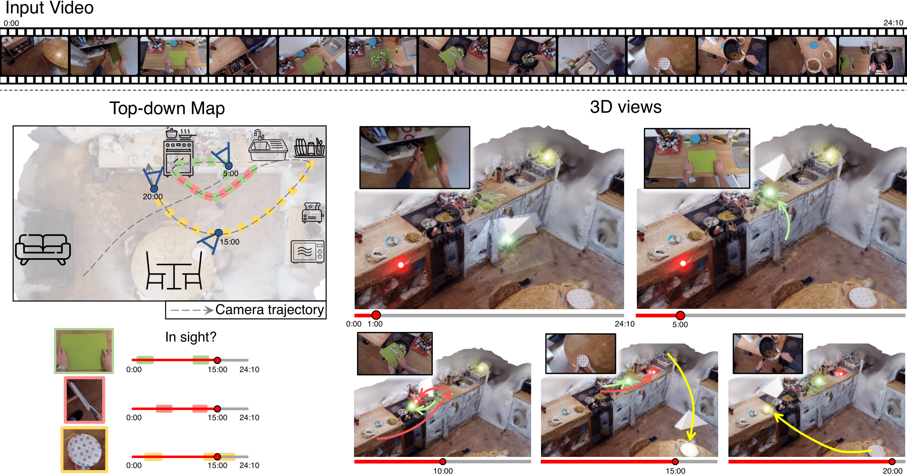
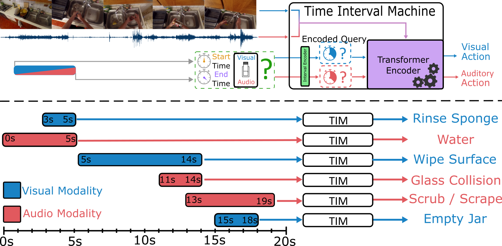
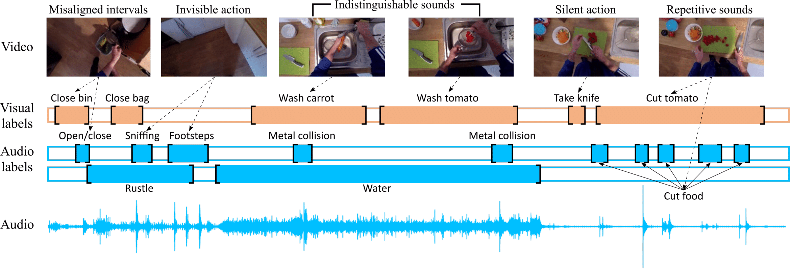

About
I am a Research Associate at the University of Bristol and a member of the MaVi research group. My current research is on 4D video understanding, aiming to develop systems that can perceive and reason about dynamic 3D scenes over time.
Previously, as a PhD researcher of Computer Vision at the University of Bristol, supervised by Prof. Dima Damen, my research focus was on leveraging multimodal data for egocentric video understanding. This included topics such as audio-visual deep learning, action recognition/detection, predicting object-interactions using eye-gaze and 3D annotations, and long-term 3D multi-object tracking. During this time, I was also a PhD intern with the Visual Representation Learning team at Naver Labs Europe.
Prior to my PhD, I earned a First Class Honours MEng in Computer Science from the University of Bristol, where my dissertation on "Video GANs for Human-Object Interactions" was highly graded. Alongside research, I've gained teaching experience across multiple undergraduate modules, contributing to both coursework design and lab-based support.
I've worked across a range of projects involving large-scale multimodal datasets and model development, contributing to research outputs such as HD-EPIC, EPIC-Sounds, TIM, and OSNOM (see Research). My experience spans dataset construction, multimodal model design, and open-source codebase development.
My technical strengths lie in deep learning, computer vision, and multimodal modelling, with extensive experience in Python (PyTorch) and capabilities with C++ and Javascript.
Email: jacob.chalk@bristol.ac.uk
News
- January 2026 - New Role: Started as a Research Associate at the University of Bristol!
- December 2025 - New Paper: Prime-and-reach paper published to arXiv!
- February 2025 - New Role: Started as a PhD Intern at Naver Labs Europe!
- February 2025 - New Dataset: HD-EPIC has been publically released and accepted to CVPR 2025!
- January 2025 - Code Released: OSNOM code and camera-ready paper have been released!
- November 2024 - New Paper: OSNOM paper published to arXiv and accepted to 3DV 2025!
- September 2024 - Journal Paper: EPIC-Sounds Journal Extended version is now available on arXiv!
- April 2024 - New Paper: TIM paper and code have been released and accepted to CVPR 2024!
- February 2023 - Paper Accepted: EPIC-Sounds has been accepted to ICASSP 2023!
- January 2023 - New Dataset: EPIC-Sounds has been publically released!
- September 2021 - New Role: Started as a PhD Researcher with Prof. Dima Damen!
Research
Current list of all research projects:

|
Prime and Reach: Synthesising Body Motion for Gaze-Primed Object Reach
Masashi Hatano*, Saptarshi Sinha*, , Wei-Hong Li, Hideo Saito, Dima Damen *: Equal Contribution arXiv preprint arXiv:2512.16456, 2025 [Webpage] [arXiv] [Code & Data] |

|
HD-EPIC: A Highly-Detailed Egocentric Video Dataset
Toby Perrett*, Ahmad Darkhalil*, Saptarshi Sinha*, Omar Emara*, Sam Pollard*, Kranti Parida*, Kaiting Liu*, Prajwal Gatti*, Siddhant Bansal*, Kevin Flanagan*, , Zhifan Zhu*, Rhodri Guerrier*, Fahd Abdelazim*, Bin Zhu, Davide Moltisanti, Michael Wray, Hazel Doughty, Dima Damen *: Equal Contribution Conference on Computer Vision and Pattern Recognition (CVPR), 2025 [Webpage] [arXiv] [Code & Data] |
|  |
Spatial Cognition from Egocentric Video: Out of Sight, Not Out of Mind
Chiara Plizzari, Shubham Goel, Toby Perrett, , Angjoo Kanazawa, Dima Damen International Conference on 3D Vision (3DV), 2025 [Webpage] [arXiv] [Code] |
|  |
TIM: A Time Interval Machine for Audio-Visual Action Recognition
, Jaesung Huh*, Evangelos Kazakos, Andrew Zisserman, Dima Damen *: Equal Contribution Conference on Computer Vision and Pattern Recognition (CVPR), 2024 [Webpage] [arXiv] [Code] |
|  |
EPIC-Sounds: A Large-scale Dataset of Actions That Sound
Jaesung Huh*, , Evangelos Kazakos, Dima Damen, Andrew Zisserman *: Equal Contribution IEEE International Conference on Acoustics, Speech, and Signal Processing (ICASSP), 2023 [Webpage] [arXiv] [Code & Data] |
Teaching
- Teaching Assistant
-
- Applied Deep Learning - 21/22, 22/23, 23/24, 24/25. Webpage.
- Image Processing and Computer Vision - 23/24. Webpage.
- Computer Graphics - 20/21, 21/22, 23/24. Webpage.
- Team Project - 20/21 Webpage.
- Software Engineering Product - 19/20, 20/21. Webpage.
Miscellaneous
Presentations
- EPIC-KITCHENS Challenges - First Joint Egocentric Vision Workshop (CVPR 2024)
- EPIC-Sounds Oral Presentation - ICASSP 2023
Conference Reviewer
- Conference on Neural Information Processing Systems (NeurIPS) - 2025
- International Conference on Computer Vision (ICCV) - 2025
- Conference on Computer Vision and Pattern Recognition (CVPR) - 2025
- European Conference on Computer Vision (ECCV) - 2024
Journal Reviewer
- IEEE Open Journal of Signal Processing (OJSP) - 2025
- International Journal of Computer Vision (IJCV) - 2025
- IEEE Transactions on Pattern Analysis and Machine Intelligence (TPAMI) - 2024
Honours and Awwards
- Outstanding Reviewer
- International Conference on Computer Vision (ICCV 2025)
- Conference on Computer Vision and Pattern Recognition (CVPR 2025)
- EgoVis 2022/23 Distinguished Paper Awards - First Joint Egocentric Vision Workshop (CVPR 2024)
- EPIC-KITCHENS Challenges Winner - First Joint Egocentric Vision Workshop (CVPR 2024)
-
- Audio-Based Interaction Recognition (2nd)
- Audio-Based Interaction Detection (2nd)
- Action Detection (3rd)
- Top 5 Third Year MEng Computer Science/Computer Science with Maths - Awarded by Netcraft (University of Bristol 2020)